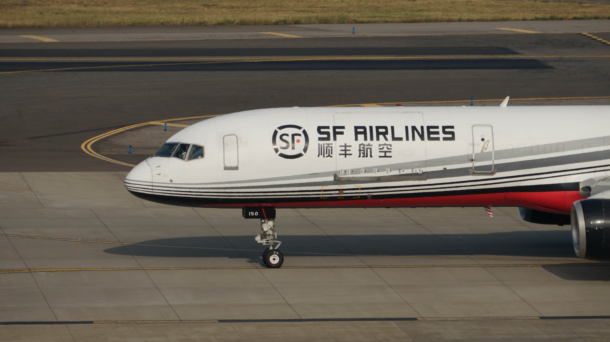

757-200F (SF AIRLINES)
Region : China (PRC)
Spotted place : Taiwan Taoyuan International Airport (TPE/RCTP)
Gears : SONY NEX-6 ƒ/8 1/640 210 mm ISO 100
Region : China (PRC)
Spotted place : Taiwan Taoyuan International Airport (TPE/RCTP)
Gears : SONY NEX-6 ƒ/8 1/640 210 mm ISO 100